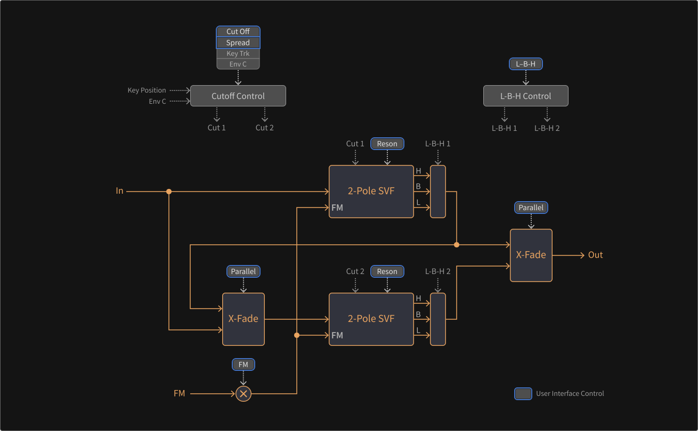

State Variable Filter
The second applyable filter to the branches is called the „State Variable Filter“, a tool for multifunctional subtractive filtering that is fed by an adjustable crossfade mix of both branch signals. The Comb Filter can be faded into the input mix as well.
The State Variable Filter consists of two two-pole filters with blendable characteristics (lowpass, bandpass, highpass) which can operate in parallel or in series by a continuously adjustable amount. In serial mode, the damping slope can be raised from 12 to 24 dB per octave (becoming a four-pole filter effectively). In parallel applications, the filters can also be used to create two formants (useful for vowel-like sounds).
The filter frequencies are determined by a tunable center frequency which can be sensitive to Key Tracking and the influence of Envelope C. A Spread parameter determines how much the individual filter frequencies are shifted apart from the center frequency. With no spreading, one peak emerges at the center frequency. The strength of the peak depends on the filter resonance, which also can be sensitive to Key Tracking and the influence of Envelope C. When spreading is applied, the peak splits into two peaks, weakening strong resonances and creating formants.
The filter type can be continuously blended between an overall lowpass, bandpass and highpass behavior. In serial mode with a negative spreading, a band-rejecting (notch) behavior can be achieved as well.
A crossfade mix of both branches can also be applied for frequency modulation. Parallel behavior can be produced in two ways, by either adding or subtracting the second filter to/from the first. Subtraction will lead to phase cancellations.
In conclusion, the State Variable Filter is a versatile subtractive filter capable of creating formants and different characteristics.